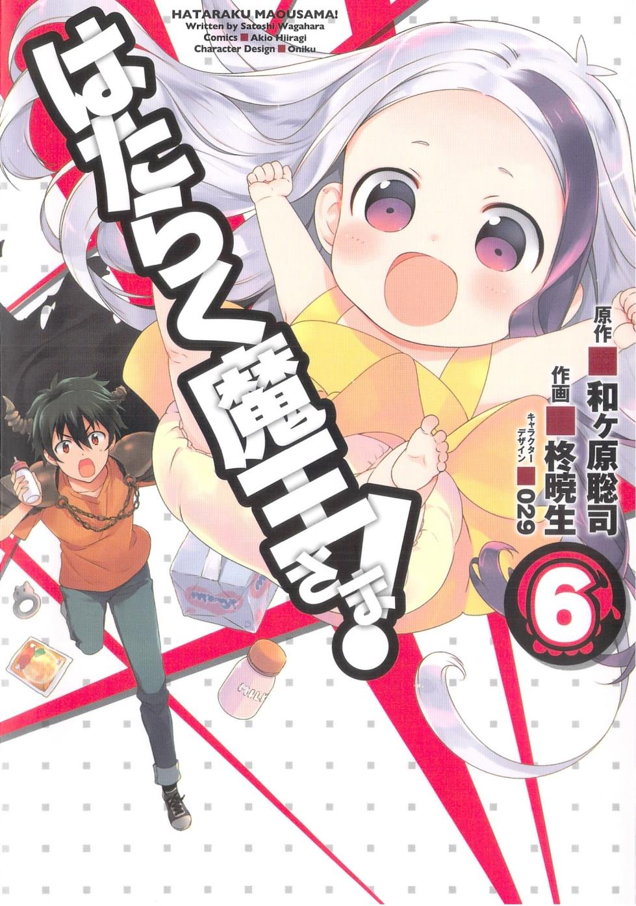
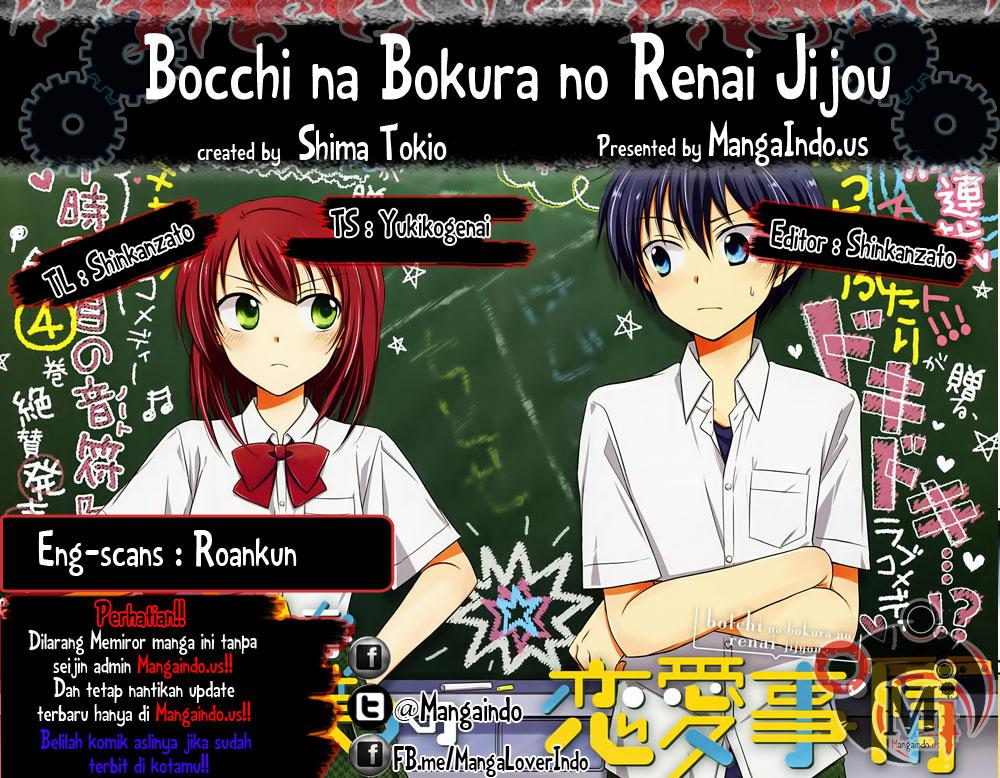
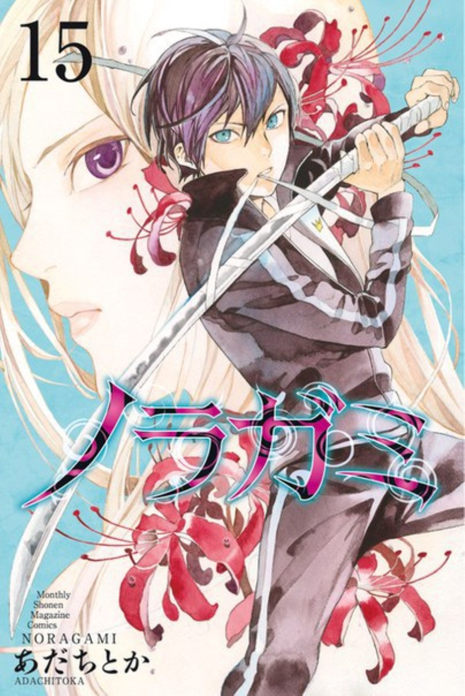

Definiton of Manga
Apa sih Manga itu?
Yoo bagi kalian yang suka Anime pasti kenal juga dengan yang namanya Manga. Disini saya akan jelasin seputar Manga. Buat yang belum tau apa sih Manga itu?.
Sebelum merujuk ke yang namanya Manga saya akan memberikan penjelasan tentang komik. Kalian pasti tau kan yang namanya komik, semua orang pasti tau komik. Komik adalah cerita yang dilengkapi dengan gambar atau ilustrasi agar pembaca dapat mengerti dan mengetahui apa yang sedang terjadi di cerita. Terus emang apa hubungannya komik sama yang namanya Manga? ya tentu ada hubungannya lah!.
Manga adalah kata komik dalam bahasa jepang, Manga (漫画) bisa dibaca man-ga atau ma-ng-ga (bukan mangga buah lo ya >,< ). Jadi kata-kata Manga digunakan khusus untuk membicarakan tentang komik Jepang. Kalo ada gambar pasti ada yang menggambar kan, nah yang menggambar dan mengarang Manga ini namanya Mangaka (漫画家) bisa dibaca man-ga-ka atau ma-ng-ga-ka. Seperti halnya Manga, Mangaka adalah sebutan Jepangnya komikus (orang yang menggambar / mengarang komik) .
Berikut ini adalah contoh Manga yang populer.
Fuuka

Hataraku Maou - Sama

Owari No Seraph

Shingeki No Kyojin

Bocchi na Bokura no Renai Jijou

Noragami Aragoto

Fakta..
Di Jepang banyak majalah Manga yang didalamnya terdiri dari beberapa judul manga, setiap manga biasanya mengisi belasan sampai puluhan halaman di majalah itu (satu chapter/bab). Biasanya manga yang sudah sukses atau yang sedang populer bisa diangkat ke dalam bentuk ANIME (animasi), beberapa contoh manga populer yang sudah diangkat ke dalam bentuk anime adalah Naruto, Bleach, Dragon Ball, One Piece, Fairy Tail, dan masih banyak lagi.
Bukan hanya kebentuk anime saja, beberapa yang sukses dan populer juga diangkat kedalam bentuk Live Action (versi manusia), contohnya Death Note, Detective Conan, Crows (Crows Zero), 20th Century Boys, dan lain-lain.
Beberapa cerita didalam novel/visual novel biasanya juga diangkat kedalam bentuk manga, contohnya Death Note, Sword Art Online (animenya sedang populer di musim ini), dan lain-lain.
Setelah beberapa lama, chapter-chapter manga dari majalah manga itu akan dikumpulkan dan dicetak ke dalam bentuk buku berukuran biasa, yang disebut Tankōbon (biasa disebut volume). Manga dalam bentuk tankōbon ini dibuat dengan kertas yang berkualitas tinggi dan berguna untuk orang-orang yang tidak membeli atau malaas membeli majalah-majalah manga yang biasa terbit setiap minggu. Manga bentuk tankōbon ini biasanya diterjemahkan ke dalam berbagai macam bahasa sesuai negara masing-masing.
 |
Anime Season |
Hai Friends, kali ini saya akan membahas tentang Musim dalam rotasi rilis Anime, eitss Musim disini bukan berarti "Season 1 atau Season 2" melainkan rotasi munculnya Anime sesuai Musim yang ada di Jepang....... |
Read More.... |
 |
Anime Dengan Cerita yang Berkesan |
Hai Friends Anime Lovers, sekarang saya akan membagikan beberapa Anime dengan ceritanya yang menarik. Nominasi pertama anime dengan cerita yang unik menurut saya adalah anime....... |
Read More.... |
 |
Anime Dengan Cerita yang Membingungkan |
Hai Friends, kali ini saya akan memberikan info tentang beberapa Anime yang memiliki cerita membingungkan tapi menarik saat kita selesai menontonnya. Nah apa sajakah Anime tadi, langsung saja kita cuss ke bawah, jangan malas membaca yah... |
Read More.... |